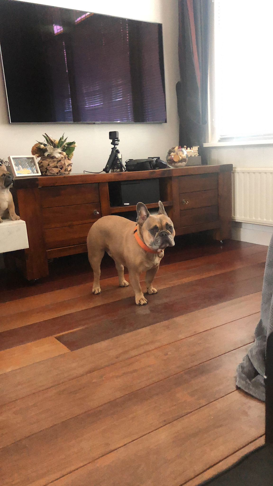
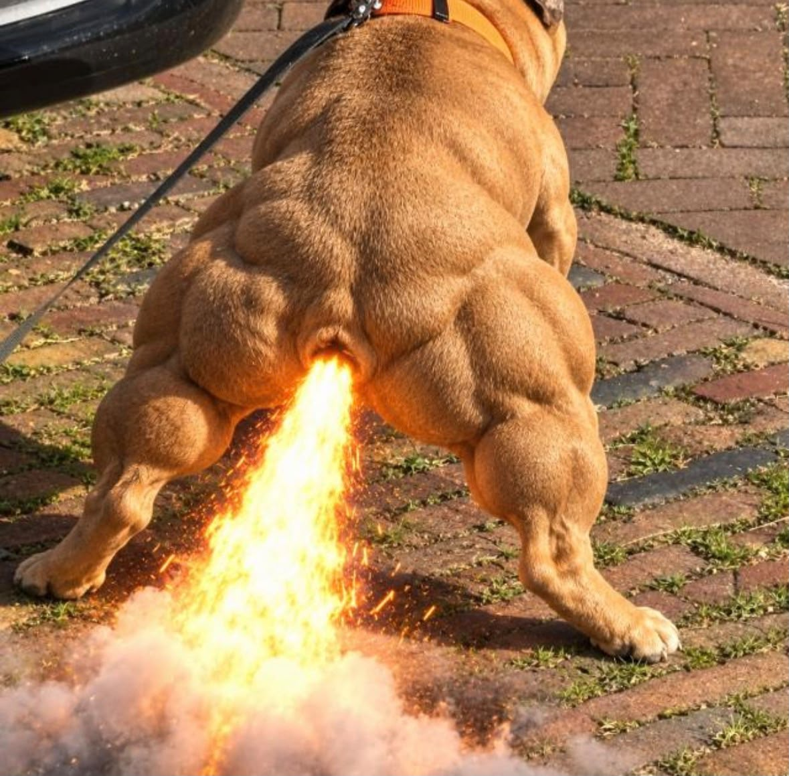
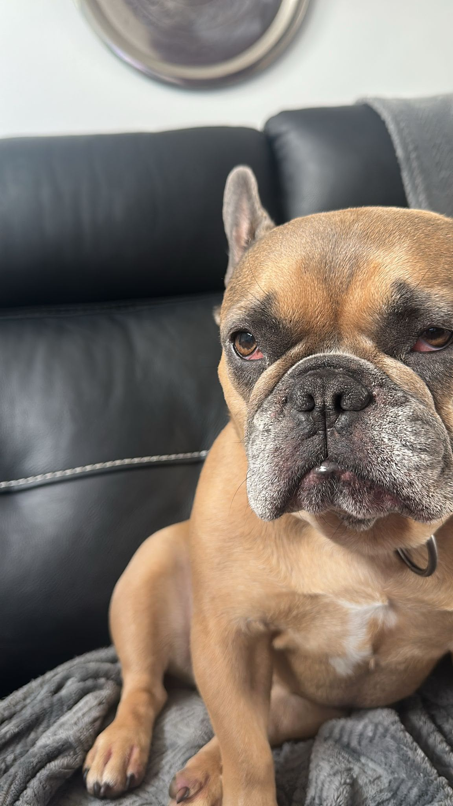

Buzzy looking stylish in his favourite hat!

This is Buzzy posing for the camera!

Buzzy blasting off into space!

Buzzy seems to enjoy his weed!
Use this website to learn all about Buzzy and find his most iconic pictures!
Buzzy looking stylish in his favourite hat!

This is Buzzy posing for the camera!

Buzzy blasting off into space!

Buzzy seems to enjoy his weed!
Buzzy is a French Bulldog and is, as you can see, brown and black. He was born in Friesland on ....... and his first collar was red!
He was eventually adopted by the loving family v. Oosten.
Buzzy is a rather round little creature who loves four things: eating snacks, taking naps, farting and doing absolutely nothing. However when he is not doing this, he is usually being harassed by Maverick Willem van Oosten and his companions.
Looking at the pictures above you could probably imagine that he is a very sad and suicidal dog. Which he in fact is.